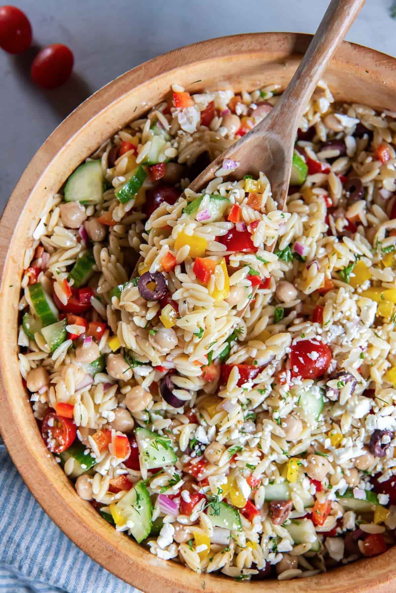
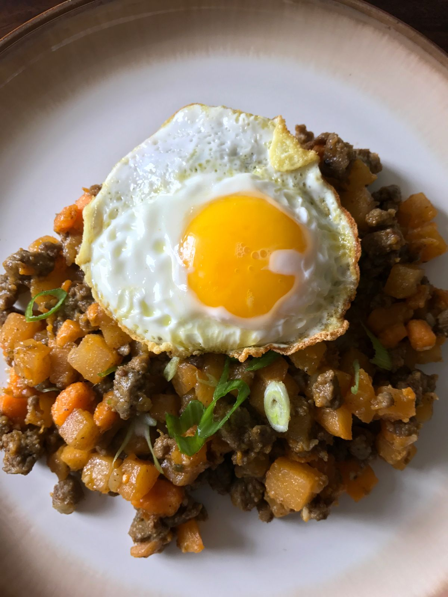
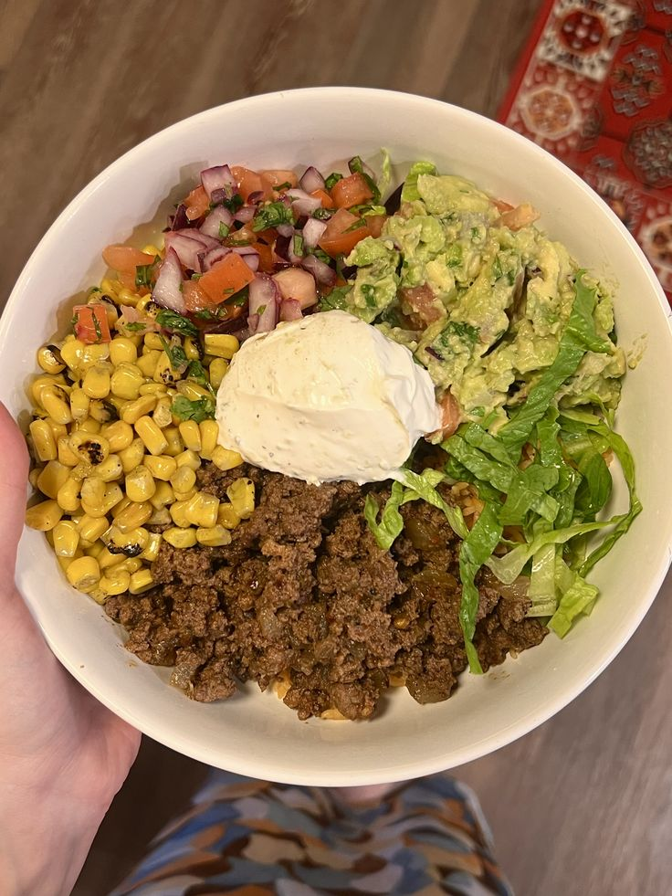

Clinically grounded
Recipes come from or are reviewed by registered dietitians — not wellness influencers.
NUTRITION MADE FOR REAL LIFE
Personalized recipes, weekly planning, shopping, symptom tracking, and RD-backed nutrition support — all in one app built for women with chronic conditions.


WHY NURI
Nutrition advice shouldn't mean endless Googling, confusing wellness claims, or expensive appointments just to figure out what to eat.
Nuri brings condition-specific recipes created with registered dietitians into one place — so eating for your health feels a little less complicated.
Recipes come from or are reviewed by registered dietitians — not wellness influencers.
Support for PCOS, endometriosis, insulin resistance, gut health, hormones and more.
Because eating for your health should still feel like eating food you genuinely want.
YOUR NURI
Tell Nuri what you're managing, what you like to eat, and what your day looks like. We help you find meals that make sense for your goals and your real life.

Meredith Brandt, MS, RD
CHRONICALLY, BY NURI
Women's health, recipes, nutrition, founder stories, and the things we wish someone explained sooner — from the team building Nuri.
Read Chronically →Get new Chronically stories, recipes, and Nuri updates.
NURI
Open Nuri for personalized recipes, weekly planning, shopping, and nutrition support built around the health conditions women actually manage.
Get the app